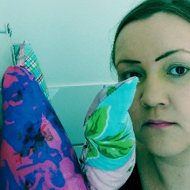

Laura Kärki (b.1978) is a Finnish visual artist living and working in Germany, Finland and artist residencies abroad. Laura Kärki is M.A. Master of Arts graduate 2006 of the the Aalto University School of Art and Design Helsinki. She has Bachelor's degree in textile design from Metropolia Vantaa and ceramics artisan from Tammela Art and Crafts school.
Kärki is working with poems, installation, sculpture and sound. Her artworks deal with themes of alienation and being an outsider. Loneliness, relatives and friends forgotten in a hurry and incapability for empathy are all connected to the social problems of the contemporary society.
Her work has been exhibited in Finland and abroad such as Circulo de Bellas Artes in Madrid, Mänttä Art Festival, Museum of Wäinö Aaltonen and Museum of Vantaa. Her works are in as Finnish State Art Collections and Borenius & Kemppinen Art Collections.
I work with word, sight and sound. I am the visual artist, poet, and sound designer of my artworks. In addition to this I am a craftswoman too, so I let the techniques and the process of creation be visible in the artworks as a part of them.
My artworks deal with themes of alienation and being an outsider. Loneliness, relatives and friends forgotten in a hurry, and incapability for empathy are all connected to the social problems of the contemporary society.
I work in Berlin, Lahti, Helsinki and artist residencies abroad. I am currently working for my exhibitions in 2014 - 2015.
In my artistic work, I combine poems, sculptures and a variety of soundscapes. I work with several simultaneous ideas, which gradually deepen, receiving stimuli from the surrounding life. My working processes are long, so a work's arc from idea to a finished piece of work or installation may take several years. I like the slow maturation of the works, it is interesting but also a challenge, as the life surrounding us is very fragmented. One must be able to hold on and to let go when searching for the final direction and form of the works. I choose the material of the works depending on the idea, and works have been born from materials such as washing sponges, toasts, and coffee filters.
In recent years, I have made a series of sound installations, to which I have attached sound and other material related to home. For several years now, my works have been dealing with the effect of being in a constant hurry to people's living environment.
At the moment I am working in Berlin, Lahti and Helsinki.
Laura Kärki creates images, words and sound. She is the visual artist, poet and sound designer of her own works. In addition to this, she is artisan who lets the technique and work process show in the works and be part of them.
Versatility is a strength. Kärki searches her artistic direction from content, not esthetics. She has content first, then materials and finally form. Her works are created with technique that best supports the content. The form does not, however, get in the shadow of the content. Well chosen materials and techniques come to their own when they are in harmony with the content. The price Kärki pays from this is the lack of visual distinguishing characteristics.
It makes harder to create an artist brand but brings more credibility. In her chosen way, the works speak from themselves, and she is left with time to think and deepen the content.
Kärki is proficient in working with both ceramics and textile and utilizes her expertise in her works. She stiches sculptures, reproduces object collages as ceramics, and even makes photo print sculptures on fabric of customers' own pictures.
Pill Days (2010) is ceramics. There contraceptive pill packagings are reproduced of traditional design material. The contradiction is delicious especially because the work is very beautiful. With a material choice, an everyday object having however controversial set of values has become an interesting statement.
Stress Balls (2011) are big black pillows. They are gentle oddities stitched to form. Stress balls reach their many hands towards the viewer. Whether they are asking or giving help remains unanswered.
Why Won't Anyone Play With Me? (2011) is a sad small sculpture, where many of Kärki's used techniques merge. The work stiched from a fabric print also has a soundscape. The girl in the print is Kärki herself, but that is not ultimately what matters. The work depicts children's feelings of loneliness in a general and recognizable way.
Themes of alienation and feelings of being left out bind Kärki's works. Loneliness, friends and relatives forgotten in a hurry, and inability for empathy are all related to social problems of contemporary society.
Kärki does not slack around but has the courage to comment against indifference. She teaches us to ask How Are You (2011) written with calligraphy taught in elementary school and gives out her poems within crumbled paper balls to read in the work Momentary Reliefs (2003-2011). Engagements (2010) is made of molten symbols of love, to which probably many who have experienced deception or break-ups can relate.
The works are eloquent and force to think. They hold inside small cracks, that give out unscrupulous characteristics of the reality we all have accustomed to. Kärki is a topical visual artist, who does not respect boundaries. She has the courage to take expressive risks and because of this, her works are easily approachable. The works are experiential and rise emotions. That is a welcome and rare characteristic in this era of calculated expression.